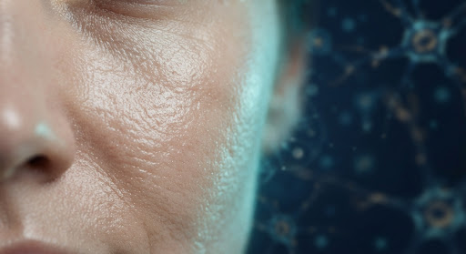
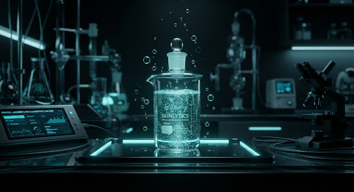

Sensitivities & Lifestyle
Refine your profile with environmental and biometric data for medical-grade precision.
emergency_home
Known Allergies
Select any known ingredients that cause adverse reactions.
medical_mask
Sensitivities
Reacts to actives
Sun-sensitive
Redness-prone
bedtime
Rest & Stress
7.5 hrs
Moderate
water_drop
Hydration & Environment
Daily Water Intake
6 / 8 glasses

Texture Analysis
Biological Focus

Ingredient Safety
Molecular Screening